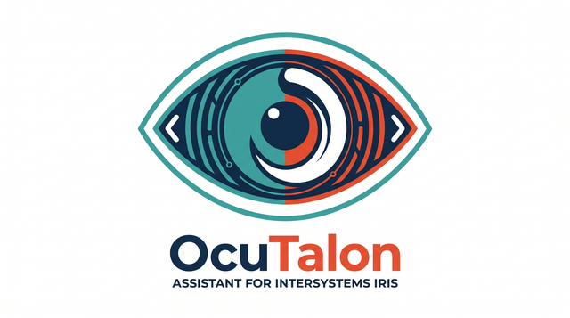

Try OcuTalon in two minutes
Break the feed, and approve the fix from your phone.
OcuTalon is an assistant that lives inside InterSystems IRIS Interoperability. When a feed breaks, it reads the failed messages and the trace, names the cause in plain English, and proposes a fix that waits for your approval. For everything that arrives, an AI Hub agent makes one attention decision (ignore it, save it for your daily digest, tell you now, or act), and every decision, with its reasons and cost, is a production message you can open in Visual Trace. No API key needed.
Sign in to the demo
Before you start
- The demo resets every 4 hours. Next reset: 16:00 (in 1 hour 42 minutes).
- Your chat, phone, mailbox and orders are yours alone.
- Have Telegram? You can scan a QR code inside to get the notices on your own phone.
- Each session can send 50 messages an hour in the chat or Telegram.
- OcuTalon can't run shell commands, and every action it takes is recorded in the IRIS audit log.
Read-only Visual Trace account,
For opening Visual Trace in the portal yourself (trace links on the page are already signed in). See each decision with its cost, and every step.
- User name
- trace-viewer
- Password
- example-password